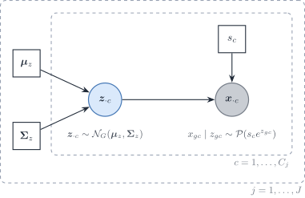
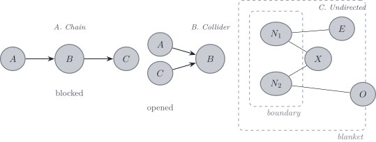

a A tilde marks a quantity rescaled to a reference unit: per cell, or relative to the reference protocol. This mean is a mean of raw counts. It is not a library-size proportion.
bS_j summarises the raw-count mean. It is not a divisor applied to the counts. \boldsymbol{\theta} is not used for this split.
Gene–gene covariance within a type, and variation across donors or types.
Total expression contributed by type j to sample i.
Single-cell signatures
\sum_j m_j \boldsymbol{\Sigma}_jb
Covariance when counts are fixed and cells of a type are independent.
Purified profiles
\sum_j p_j^2 \boldsymbol{\Sigma}_jc
Covariance when each type contributes one population profile, as in a FACS or cytometry reference.
a Per cell, by the number of cells. Not a division of each gene by the library total: that division induces a spurious correlation between genes.
b Single-cell signature paradigm: the reference is the cells.
c Purified-profile paradigm: one profile per type. The likelihood in the package fits this covariance. It is not a preferred reference over the single-cell signatures.
Local symbols, defined once here. \omega_{gg'} is an entry of \boldsymbol{\Omega}_j; u indexes a gene removed from or added to the panel. s^{\mathrm{bio}}_c and s^{\mathrm{tech}}_c are the biological and technical parts of s_c; \nu, \nu^{\mathrm{bio}}, \nu^{\mathrm{tech}} their squared coefficients of variation; \kappa=\nu^{\mathrm{tech}}/(1+\nu^{\mathrm{tech}}) the share removed by the denoised estimator. \boldsymbol{m}_{\cdot c} is the molecule content of cell c, \boldsymbol{\Sigma}^{\lambda}_j the covariance of \boldsymbol{\lambda}_{\cdot c} and \boldsymbol{\Sigma}^{\mathrm{bio}}_j the denoised within-type covariance; \boldsymbol{S}^{\mathrm{bio}}(\boldsymbol{p})=\sum_jp_j\boldsymbol{\Sigma}^{\mathrm{bio}}_j. x_{+c}=\mathbf{1}^{\top}\boldsymbol{x}_{\cdot c} and y_{+i}=\mathbf{1}^{\top}\boldsymbol{y}_{\cdot i} are library sizes. \boldsymbol{X}_c is the centred C_j\times G matrix of the type-j cells. \operatorname{cl}, \operatorname{tw} and \operatorname{mlt} are the clique number, treewidth and maximum-likelihood threshold of a graph \mathcal{G} with edge set E; d is its maximum degree. K is the number of cross-validation folds; \alpha an FDR level; \gamma the EBIC parameter. \circ is the elementwise product and e^{\boldsymbol{A}} an elementwise exponential.
Introduction
This vignette states which covariance DeCovarT needs from a single-cell reference, and how it is estimated. The target is the within-type covariance \boldsymbol{\Sigma}_{W,j} that enters the likelihood, not a biologically interpretable gene regulatory network. The plug-in is the linear shrinkage of the empirical covariance (Sec. 2.1). Four alternatives are kept as sensitivity analyses of that choice: three sparse-precision estimators (graphical lasso, SILGGM support with a refit, PLNnetwork) and a denoised version of the shrinkage (Sec. 1.1). All five are scored by the same nested cross-validation (Sec. 4.1), and their effect on the proportions is measured in the misspecification sweep of the reproducibility book. The application to the Suppinger gastruloid reference (gene panel, cell counts, solver settings, outputs) is in the covariance chapter of the reproducibility book.
Note 1: Why a regularised covariance rather than a sparse precision
DeCovarT evaluates a Gaussian likelihood whose covariance is a sum of cell-type covariances. With one single-cell specimen, the identified object is the within-type cell-to-cell covariance \boldsymbol{\Sigma}_{W,j}, which enters linearly in p_{ji} (one-replicate regime). With purified population profiles, \boldsymbol{\Sigma}_j enters through \sum_jp_{ji}^{2}\boldsymbol{\Sigma}_j (convolution). Three arguments favour the covariance as the estimated object. They do not carry the same weight.
Marginalisation (exact). If the cells of type j have covariance \boldsymbol{\Sigma}_j over all genes, the covariance of a panel \mathcal{P} is the sub-matrix (\boldsymbol{\Sigma}_j)_{\mathcal{P}\mathcal{P}}, whatever other genes are measured. The precision of the panel is \{(\boldsymbol{\Sigma}_j)_{\mathcal{P}\mathcal{P}}\}^{-1}, a Schur complement of \boldsymbol{\Omega}_j, not the sub-matrix (\boldsymbol{\Omega}_j)_{\mathcal{P}\mathcal{P}}. Removing one gene u from the panel changes the remaining entries to
so a precision entry, and the conditional variance 1/\omega_{gg}, change exactly when both genes are neighbours of u; the covariance entries do not change. A covariance entry is a property of a gene pair; a precision entry is a property of the panel. The consequence for the prior: regulators outside the panel, including genes removed by the feature selection, fill in the panel precision. A few such latent variables make the marginal precision sparse plus low rank rather than sparse (Chandrasekaran et al. 2012), so a sparse \boldsymbol{\Omega}_j on a selected panel is a weak assumption.
The mixture discards the zeros (generic). Sums such as \sum_jp_{ji}\boldsymbol{\Sigma}_{W,j} or \sum_jp_{ji}^{2}\boldsymbol{\Sigma}_j have dense inverses even when every \boldsymbol{\Omega}_j is sparse, outside special cases such as diagonal \boldsymbol{\Sigma}_j. The likelihood uses each \boldsymbol{\Sigma}_j only through the sum, which it then inverts.
Variance against bias (depends on the truth). A sparse \boldsymbol{\Omega}_j has |E_j|+G free parameters instead of G(G+1)/2. That lowers the variance when the truth is sparse in \boldsymbol{\Omega}_j and adds bias when it is not. The inverse matters for DeCovarT: Stein’s loss (Proposition 1) weighs \boldsymbol{\Sigma}^{-1} as well as \boldsymbol{\Sigma}. The question is which object carries the structural assumption, not whether the inverse is used.
The same choice is standard for Gaussian plug-in classifiers, whose discriminant is a likelihood with an estimated covariance. Regularised discriminant analysis shrinks each class covariance towards a pooled or diagonal target TODO-cite: Friedman 1989, J. Am. Stat. Assoc. 84(405):165–175, doi:10.1080/01621459.1989.10478752; not in Zotero. In high dimension, the diagonal plug-in (“naive Bayes”) can beat the sample-covariance plug-in of Fisher’s linear discriminant TODO-cite: Bickel & Levina 2004, Bernoulli 10(6):989–1010, doi:10.3150/bj/1106314847; not in Zotero. Warton tunes a ridge-regularised correlation matrix by cross-validated normal likelihood, the criterion of Sec. 4.1TODO-cite: Warton 2008, J. Am. Stat. Assoc. 103(481):340–349, doi:10.1198/016214508000000021; not in Zotero. These results support a regularised covariance for prediction. None shows that it beats a sparse precision when the truth is sparse in \boldsymbol{\Omega}_j; that is why the sparse estimators stay as sensitivity analyses. The zeros of \boldsymbol{\Omega}_j and their recovery (Sec. 1.2, layer 3) matter for a network, not for the deconvolution. When the proportions are known, CSNet estimates type-level co-expression from the same convolution (CSNet) (Su et al. 2024).
Table 1: Five estimators of the within-type covariance. The three sparse estimators target direct interactions (non-zero partial correlations); the two shrinkage estimators keep direct and indirect associations. Each has one tuned parameter, chosen by the criterion of Sec. 4.1.
linear moments of the latent (\boldsymbol{\mu}_z,\boldsymbol{\Sigma}_z) (Eq. 17)
support of the latent precision
Which covariance: raw or denoised
The empirical covariance of raw UMI counts mixes biological covariation with two measurement terms. This section separates them, states which of them the bulk inherits, and gives one preprocessing step for every estimator of Table 1.
with s^{\mathrm{bio}}_c, s^{\mathrm{tech}}_c and \boldsymbol{\lambda}_{\cdot c} independent. The unknown terms are:
s_c=s^{\mathrm{bio}}_cs^{\mathrm{tech}}_c, the size factor of cell c: a dimensionless, cell-wide factor. s^{\mathrm{bio}}_c is biological (cell volume, cycle phase), s^{\mathrm{tech}}_c technical (capture efficiency, sequencing depth of the droplet).
\nu=\operatorname{CV}^{2}(s_c), the extrinsic noise, and its two parts \nu^{\mathrm{bio}} and \nu^{\mathrm{tech}}.
\boldsymbol{\lambda}_{\cdot c}, the size-free expression, with covariance \boldsymbol{\Sigma}^{\lambda}_j within type j. It is the mean of the Poisson measurement once s_c and b_g are factored out, proportional to the molecule content \boldsymbol{m}_{\cdot c}(Sarkar and Stephens 2021; Fang and Pachter 2025). It is not a transcription rate in the sense of kinetic models of bursting, in which the molecule count is itself random given the rates TODO-cite: Gorin & Pachter, biophysical models of transcription and sequencing (Monod); key not in inst/REFERENCES.bib.
b_g, the capture efficiency of gene g, with \boldsymbol{\mathcal{B}}=\operatorname{diag}(\boldsymbol{b}).
\tilde{\boldsymbol{\mu}}_{\cdot j}=\mathbb{E}[\boldsymbol{x}_{\cdot c}\mid j] and S_j=\mathbf{1}^{\top}\tilde{\boldsymbol{\mu}}_{\cdot j}, the mean and the mean transcriptome size of a type-j cell, in counts.
\boldsymbol{\Sigma}^{\mathrm{bio}}_j, the covariance of the captured content at unit technical factor, and its mixture \boldsymbol{S}^{\mathrm{bio}}(\boldsymbol{p}):
a_i, c_i=a_in_i and \phi_i=a_i^{2}n_i, the bulk scales: a_i is the bulk depth per cell relative to the reference, n_i the number of cells behind bulk sample i.
Size factors: what they are and how they relate
Why \mathbb{E}[s_c\mid j]=1.Eq. 2 depends on the cell factors only through the product s_c\boldsymbol{\lambda}_{\cdot c}: for any k>0, the pair (ks_c,\boldsymbol{\lambda}_{\cdot c}/k) gives the same law. The scale of s_c is not identified, and one constraint per type fixes it, as in Fang and Pachter (their equations 1–2): \mathbb{E}[s^{\mathrm{bio}}_c\mid j]=\mathbb{E}[s^{\mathrm{tech}}_c\mid j]=1. By independence,
so the type-level size goes into the mean, and the size factor is the library rescaled by it. Its plug-in estimate \hat s_c=x_{+c}\big/\bigl(C_j^{-1}\sum_{c'\in j}x_{+c'}\bigr) has mean exactly one over the cells of type j.
Why 1+\nu=(1+\nu^{\mathrm{bio}})(1+\nu^{\mathrm{tech}}). With \mathbb{E}[s_c]=1, \nu=\operatorname{Var}(s_c)/\mathbb{E}[s_c]^{2}=\mathbb{E}[s_c^{2}]-1, and the same holds for each factor. Independence of the two factors gives
The identity needs s^{\mathrm{bio}}_c independent of s^{\mathrm{tech}}_c. A capture efficiency that grows with cell volume would break it.
S_j against s_c. The two are different objects. S_j is a type-level mean transcriptome size, in counts; s_c is a within-type, dimensionless fluctuation around it, and \hat s_c is the library rescaled by \hat S_j. Both split into a technical and a biological part:
Technical level. If one capture protocol, one chemistry and one sequencing run serve every type, the mean technical level S^{\mathrm{tech}} is shared, enters c_i, and drops out of the proportions. That sharing is an assumption: a type-specific capture (lysis, RNA content near saturation) would be confounded with biology.
Without spike-ins, neither s^{\mathrm{tech}}_c nor a type-specific capture can be separated from the biological size. The data identify only the product s_c, and only up to the constraint of Eq. 4.
What the raw covariance contains
The law of total covariance applied to Eq. 2 gives
It is the matrix form of the count covariance, grouped by what the bulk inherits. Solving for \boldsymbol{\Sigma}^{\mathrm{bio}}_j with \kappa=\nu^{\mathrm{tech}}/(1+\nu^{\mathrm{tech}}) gives \boldsymbol{\Sigma}^{\mathrm{bio}}_j=\boldsymbol{\Sigma}^{\mathrm{raw}}_j-\operatorname{diag}(\tilde{\boldsymbol{\mu}}_{\cdot j})-\kappa\{\boldsymbol{\Sigma}^{\mathrm{raw}}_j-\operatorname{diag}(\tilde{\boldsymbol{\mu}}_{\cdot j})+\tilde{\boldsymbol{\mu}}_{\cdot j}\tilde{\boldsymbol{\mu}}_{\cdot j}^{\top}\}, whose sample version, with a finite-sample correction, is the denoised within-type covariance. The Poisson diagonal also attenuates every correlation of the raw counts, most for lowly expressed genes (Sec. 5.1.5).
Which matrix enters the bulk
The bulk is counted once, at its own depth, from the pooled molecules. On the reference capture scale, with n_i cells drawn with proportions \boldsymbol{p}_{\cdot i},
Keeping each reference-counted molecule with probability a_i\le1 (binomial thinning) gives the same law. A model that counts every cell at the reference depth and then multiplies the counts by a_i would scale the Poisson diagonal by \phi_i instead of c_i; no library preparation does that, and it is not used. Two consequences follow. The sampling noise of the reference does not enter the bulk; the bulk has its own, once. And the technical size factor of the reference cells does not enter either: the bulk has no droplets. In units of \phi_i,
so, with \nu^{\mathrm{tech}}=0, the right plug-in depends on the bulk depth per cell a_i:
a_i=1, the bulk counted at the per-cell depth of the reference: the raw covariance is exact;
a_i>1: the raw covariance over-weights the sampling diagonal by the factor a_i; the denoised covariance alone is the limit a_i\to\infty;
a_i<1: the raw covariance under-weights the diagonal by the factor a_i, and the denoised one drops it;
in every case the off-diagonal entries are those of \phi_i\boldsymbol{S}^{\mathrm{bio}}; the choice moves the gene weights and the correlations, not the network. Gene g is dominated by sampling noise when \tilde\mu_g(\boldsymbol{p})>a_iS^{\mathrm{bio}}_{gg}(\boldsymbol{p}).
The plug-in that holds at every depth is the denoised covariance plus the bulk sampling term c_i\operatorname{diag}(\tilde{\boldsymbol{\mu}}\boldsymbol{p}_{\cdot i}). For UMI-like bulk counts it adds no parameter, since c_i and \phi_i are already estimated; read counts need a dispersion \omega_i\ge1 in front of the term, which one sample identifies weakly. The covariance is then no longer proportional to \phi_i, so the closed form \hat\phi=Q/G of the closed-form scales is lost and \phi_i is profiled numerically, in one dimension.
Status. This variant is not implemented: deconvolute_single_cell() uses one matrix, and with a raw \boldsymbol{\Sigma}_{W,j} it assumes a_i=1 and \nu^{\mathrm{tech}}=0. The raw plug-in stays the default; the denoised covariance is the target and enters as a sensitivity arm (Table 1).
Which regime to expect. Taking expectations of the library sizes in Eq. 7,
the bulk counts per cell over the reference counts per cell. A bulk library is deeper in total than one droplet, but it spreads that depth over every cell of the sample, so a_i<1 is the usual case. For illustration (our numbers, not a measurement), a bulk library of 2\times10^{7} counts from 10^{5} cells against a reference with 5\times10^{3} UMIs per cell gives a_i=0.04; if those counts behave as UMIs, a gene is then dominated by bulk sampling noise unless its biological Fano factor S^{\mathrm{bio}}_{gg}/\tilde\mu_g exceeds 25. Bulk counts are reads, not molecules: amplification makes them overdispersed (\omega_i\ge1), which lowers the effective depth to a_i/\omega_i. The Suppinger value needs n_i, the number of cells per bulk sample; it is computed in the reproducibility book. The identities of this subsection are checked in the SymPy ledger of the CardamomOT comparison note (answer-cardamomOT/verification/).
Library normalisation without spike-ins
The Suppinger reference has no spike-ins. Two treatments of the size factor are possible:
Table 2: Raw counts against per-cell library normalisation, without spike-ins.
Option
Exported mean \widehat{\boldsymbol{\mu}}_{\cdot j}
(a) Raw per-cell counts, at most one global constant
unbiased for \tilde{\boldsymbol{\mu}}_{\cdot j} (Eq. 4); keeps S_j, so \boldsymbol{p}_{\cdot i} stays a cell proportion
keeps the biological size (wanted); keeps the Poisson diagonal and the technical rank-one term of Eq. 6 (unwanted; the latter inflates every correlation)
(b) Each cell divided by its total library
removes S_j: signatures become transcript fractions, and the fit returns q_{ji}\propto p_{ji}S_j
removes the technical size (wanted) and the biological size (unwanted); a panel total adds closure correlations, a full-library total a smaller amount
Decision. No per-cell normalisation for the exported moments. The mean is computed on raw per-cell counts, the default signature of normalisation that preserves the linear mixture. The covariance is computed on the same counts, then corrected by the moment estimator with the share \kappa bracketed:
\kappa=0 treats all size variation as biological and removes only the Poisson diagonal;
\kappa=\hat\nu/(1+\hat\nu), with \hat\nu the total extrinsic noise (Fang–Pachter estimate, the mode of the normalised covariances over gene pairs), treats it all as technical. It returns \boldsymbol{\mathcal{B}}\boldsymbol{\Sigma}^{\lambda}_j\boldsymbol{\mathcal{B}}, approximately the covariance that option (b) estimates.
Spike-ins would reduce the bracket to one value. Ambient RNA from empty droplets is the only possible proxy here TODO: check whether GSE229513 provides raw droplet matrices. Size factors remain the right tool inside the gene-wise tests of the feature selection, where they are offsets for a nuisance (feature selection); that use is different.
One preprocessing step for every estimator
The denoising is a moment correction of \boldsymbol{V}_j, applied before any regularisation:
Compute \boldsymbol{V}_j and \bar{\boldsymbol{x}}_j on the raw per-cell counts of the C_j cells.
Project on the positive semi-definite cone. The corrected matrix is indefinite in general: subtracting \operatorname{diag}(\bar{\boldsymbol{x}}_j) gives negative variances to genes whose variance is close to their mean, and with C_j\le G the null directions of \boldsymbol{V}_j become negative eigenvalues. Clipping the eigenvalues at zero is the nearest positive semi-definite matrix in Frobenius norm. The corrected covariances of errors-in-variables regression meet the same problem: CoCoLasso projects on the cone, Loh and Wainwright regularise the indefinite matrix directly TODO-cite: Datta & Zou 2017, Ann. Stat. 45(6):2482–2511, doi:10.1214/16-AOS1527; Loh & Wainwright 2012, Ann. Stat. 40(3):1637–1664, doi:10.1214/12-AOS1018; not in Zotero.
graphical lasso: the correlation of the projected matrix;
SILGGM: ranks cannot be denoised, so the support still comes from the nonparanormal scores; the refit under that support uses the projected matrix;
PLNnetwork: no correction (below).
A gene whose denoised variance is zero contributes only through the bulk sampling term. \boldsymbol{\Sigma}^{\mathrm{bio}}_j needs to be positive semi-definite, not definite, once that term is in the bulk covariance; until it is implemented, a small eigenvalue floor keeps the plug-in invertible. The held-out score of Sec. 4.1 compares a denoised fit with the others only after the measurement terms of Eq. 6 are added back, because the held-out cells are raw counts.
PLNnetwork needs no moment correction, but needs a choice at export. Its latent covariance \boldsymbol{\Sigma}_z excludes the Poisson noise by construction. Its offset, the full library s_c, removes all cell-level size variation, biological size included, as scVI’s library factor does (scVI). The linear-moment map decides what is put back. Eq. 18 without its Poisson term \bar s\operatorname{diag}(\boldsymbol{m}) is the \kappa=0 end; holding s_c at \bar s is the other end. The correspondence is approximate, because the offset is the observed library, which carries Poisson noise and the variation of \mathbf{1}^{\top}\boldsymbol{\lambda}_{\cdot c}.
Sample-size regimes
Three requirements are often conflated. They are ordered here by the number of cells they need; the mean is estimated throughout, and \boldsymbol{X}_c is the centred C_j\times G matrix of the type-j cells.
Layer 1: a regularised estimate exists (C_j\ge2)
DeCovarT’s plug-in needs an estimate that is finite, positive definite and unique. It does not need the zeros of \boldsymbol{\Omega}_j. The penalty, the constraint or the structure, not the data, makes such an estimate exist when C_j\le G (Table 3).
Table 3: When each covariance estimator of type j is well defined.
maximum likelihood subject to \operatorname{cond}(\boldsymbol{\Sigma})\le a bound; the eigenvalues of \boldsymbol{V}_j are clipped to an interval with that ratio
C_j\ge2, \boldsymbol{V}_j\neq\boldsymbol{0} (our reading for an estimated mean)
Structured \boldsymbol{\Sigma}
factor plus diagonal, banded, or linear in known matrices
\operatorname{rank}\boldsymbol{V}_j=G in the result we read; below that, per structure
Shrinkage(Schäfer and Strimmer 2005)TODO-cite: Ledoit & Wolf 2004, J. Multivar. Anal. 88(2):365–411, doi:10.1016/S0047-259X(03)00096-4: the smallest eigenvalue of (1-\lambda)\boldsymbol{V}_j+\lambda\boldsymbol{T} is at least \lambda times that of \boldsymbol{T}, whatever the rank of \boldsymbol{V}_j. The diagonal target needs every V_{gg}>0, hence the presence gate (presence); the scaled identity needs only \boldsymbol{V}_j\neq\boldsymbol{0}.
Condition number: Won and co-authors keep the eigenvectors of \boldsymbol{V}_j, clip its eigenvalues in closed form, and choose the bound by predictive likelihood; the estimate is well conditioned “even when n<p” (p. 5). Their model has a known zero mean. TODO-cite: Won, Lim, Kim & Rajaratnam 2013, J. R. Stat. Soc. B 75(3):427–450, doi:10.1111/j.1467-9868.2012.01049.x; key in answer-cardamomOT/references.bib only
Structure on \boldsymbol{\Sigma}: for linear covariance models the likelihood is strictly concave on \{\boldsymbol{0}\prec\boldsymbol{\Sigma}\prec2\boldsymbol{V}_j\}, but existence is shown for a full-rank \boldsymbol{V}_j, so it does not relax C_j\ge G+1; a factor model can have an unbounded likelihood when a specific variance tends to zero (our reading). TODO-cite: Zwiernik, Uhler & Richards 2017, J. R. Stat. Soc. B 79(4):1269–1292, doi:10.1111/rssb.12217; key in answer-cardamomOT/references.bib only
Graphical lasso: with \lambda>0, positive V_{gg} and an unpenalised diagonal, it has a unique positive definite solution for any C_j\ge2, even when C_j<G(Carter 2025).
None of these estimators needs a sparse truth. Layer 1 is all the plug-in needs.
Layer 2: the unconstrained maximum-likelihood estimate exists (C_j\ge G+1)
The rank of \boldsymbol{V}_j is that of \boldsymbol{X}_c, at most \min(C_j-1,G), with equality almost surely for Gaussian cells, since C_j\boldsymbol{V}_j\sim W_G(C_j-1,\boldsymbol{\Sigma}_{W,j})TODO-cite: Muirhead 1982, Aspects of Multivariate Statistical Theory, ch. 3; key in answer-cardamomOT/references.bib only. \boldsymbol{V}_j is positive definite if and only if \operatorname{rank}\boldsymbol{X}_c=G: this needs C_j\ge G+1 and no exact linear relation between genes. With C_j\le G the centred profiles always satisfy one; a gene constant within the type is the simplest, which the presence gate removes, but the gate is necessary, not sufficient. When \boldsymbol{V}_j is singular, the Gaussian log-likelihood is unbounded above along its null directions and the maximum-likelihood estimate does not exist.
The precision has the same existence threshold, and a worse accuracy.\widehat{\boldsymbol{\Omega}}_j=\boldsymbol{V}_j^{-1} exists exactly when \boldsymbol{V}_j does. Its mean, from the inverse Wishart law, is
so with C_j=2G the precision is inflated by a factor close to two. The spectrum explains why: when \boldsymbol{\Sigma}_{W,j}=\mathbf{I} and G/C_j\to\eta<1, the eigenvalues of \boldsymbol{V}_j spread over [(1-\sqrt{\eta})^{2},(1+\sqrt{\eta})^{2}] (Marchenko–Pastur), and the smallest ones drive \boldsymbol{V}_j^{-1}. TODO-cite: Marchenko & Pastur 1967, Math. USSR Sb. 1(4):457–483, doi:10.1070/SM1967v001n04ABEH001994 A consistent estimate of a dense \boldsymbol{\Omega}_j in operator norm needs G/C_j\to0, that is C_j\gg G, not only C_j>G.
Between layers 1 and 2: the MLE on a fixed graph. Dempster’s refit under the zeros of a graph \mathcal{G} with edge set E,
\widehat{\boldsymbol{\Omega}}_{E}
=\arg\max_{\boldsymbol{\Omega}\succ0}
\log\det\boldsymbol{\Omega}-\operatorname{tr}(\boldsymbol{V}_j\boldsymbol{\Omega})
\quad\text{s.t.}\quad
\omega_{gg'}=0\ \ \forall\,(g,g')\notin E,
\tag{11}
exists for almost every sample once C_j-1\ge\operatorname{mlt}(\mathcal{G}), the maximum-likelihood threshold of the graph (with an estimated mean; the published statements assume a known zero mean). On that graph:
a clique is a set of genes pairwise joined by edges, and \operatorname{cl}(\mathcal{G}) the size of the largest;
a graph is chordal if every cycle through four or more genes has a chord; \operatorname{tw}(\mathcal{G})+1 is the smallest clique number of a chordal graph containing \mathcal{G};
\operatorname{cl}(\mathcal{G})\le\operatorname{mlt}(\mathcal{G})\le\operatorname{tw}(\mathcal{G})+1\le G, with equality on the left for chordal graphs, and the smallest k with an empty k-core also bounds \operatorname{mlt} from above, so sparse graphs have small thresholds TODO-cite: Uhler 2012, Ann. Stat. 40(1):238–261, doi:10.1214/11-AOS957; Gross & Sullivant 2018, Bernoulli 24(1):386–407, doi:10.3150/16-BEJ881; Bernstein & Outlaw 2023, arXiv:2312.03145; keys in answer-cardamomOT/references.bib only.
Bernstein and Outlaw simulate graphs selected by the graphical lasso from independent Gaussian data (G\le9): the probability that the selected graph has \operatorname{mlt}\le C_j rises with \lambda and with C_j; with one observation the graphical lasso never returned the empty graph, the only graph whose estimate then exists (pp. 4–5). This intermediate threshold governs the refit of SILGGM (Sec. 3.2).
Layer 3: the support is recovered
Support recovery by the graphical lasso needs C_j\gtrsim d^{2}\log G, an irrepresentability condition, bounded eigenvalues and a minimum |\omega_{gg'}|TODO-cite: Ravikumar, Wainwright, Raskutti & Yu 2011, Electron. J. Stat. 5:935–980, doi:10.1214/11-EJS631. Neighbourhood selection needs d\log G(Chiquet 2015, 41), under its own neighbourhood stability condition TODO-cite: Meinshausen & Bühlmann 2006, Ann. Stat. 34(3):1436–1462, doi:10.1214/009053606000000281. These are orders without constants. With G=1{,}417 and d=10, d^{2}\log G\approx726 and d\log G\approx73 (natural logarithm); hubs raise d. For a sparse graph, d^{2}\log G<G and the threshold lies between layers 1 and 2: far above two cells, below the G+1 that the unconstrained estimate needs. For a dense graph, d is of order G and the threshold exceeds layer 2. On models derived from gene expression the irrepresentability conditions never held (Heinävaara et al. 2016), and they involve the unknown \boldsymbol{\Sigma}_j: “we can never verify them on real data” (Chiquet 2015, 77).
Consequence for DeCovarT. The plug-in needs layer 1 only. The refit of SILGGM needs the intermediate threshold of layer 2. Any biological reading of the zeros needs layer 3, which is out of scope here; it can be probed by simulating precisions at the observed C_j with simulate_hierarchical_grn_moments() and measuring recovery. The reproducibility book tabulates the three thresholds for the eleven Suppinger units.
Covariance estimator
Schäfer and Strimmer’s linear shrinkage
Schäfer and Strimmer shrink the sample covariance towards a target \boldsymbol{T}, \widehat{\boldsymbol{\Sigma}}=\lambda\boldsymbol{T}+(1-\lambda)\boldsymbol{V}_j(Schäfer and Strimmer 2005, eq. 3). Their target D (“diagonal, unequal variance”) keeps the variances and shrinks the correlations towards zero (Table 1, eq. 10):
with \hat\lambda^{\ast} truncated to [0,1]. The closed form minimises the Frobenius risk (the Ledoit–Wolf lemma). The estimate is positive definite for any C_j and G once every V_{gg}>0, invariant to the scale of each gene, and costs about two sample covariances. Its precision is dense; partial correlations and a local-FDR graph can be read from it if wanted (eqs. 11–15).
The Frobenius risk is not the Gaussian likelihood that DeCovarT evaluates. \hat\lambda^{\ast} is therefore only the starting point of the cross-validated search of Sec. 4.1. In corpcor::cov.shrink(), lambda.var = 0 reproduces target D; the default also shrinks the variances towards their median. The plug-in uses raw per-cell counts (Sec. 1.1.5); the denoised arm applies the same target to the projected denoised matrix (Sec. 1.1.6).
Sparse precision estimators: sensitivity analyses
The three estimators below test the plug-in against the assumption that \boldsymbol{\Omega}_j is sparse. Each exports a covariance on the linear scale, so all are scored by the same criterion (Sec. 4.1).
Graphical lasso with an unpenalised diagonal
On the correlation \boldsymbol{R}_j, with \boldsymbol{\Delta}_j=\operatorname{diag}(\boldsymbol{V}_j),
(Friedman et al. 2008; Mazumder and Hastie 2011). Working on \boldsymbol{R}_j puts every gene on one scale for one \lambda; rescaling leaves the zeros and the partial correlations unchanged. With the diagonal unpenalised, the fitted covariance \widehat{\boldsymbol{\Sigma}}_{R}=\widehat{\boldsymbol{\Omega}}_{R}^{-1} has unit diagonal, so the exported \widehat{\boldsymbol{\Sigma}}_j=\boldsymbol{\Delta}_j^{1/2}\widehat{\boldsymbol{\Sigma}}_{R}\boldsymbol{\Delta}_j^{1/2} keeps the sample variances exactly. On the selected edges, \hat\Sigma_{R,gg'}=R_{j,gg'}+\lambda\operatorname{sign}(\hat\omega_{gg'}) in the sign convention of Eq. 13; off them, |\hat\Sigma_{R,gg'}-R_{j,gg'}|\le\lambda.
Why glasso rather than huge:huge.glasso() always penalises the diagonal, which inflates every variance by \lambda (Sec. 5.1), whereas glasso::glasso(penalize.diagonal = FALSE) leaves it free (Zhao et al. 2012). glasso 1.11 penalises the diagonal by default, so the argument must be set.
SILGGM after the nonparanormal map
SILGGM tests the entries of a Gaussian precision with a global FDR guarantee (Zhang et al. 2018). Its input must be close to Gaussian, so the counts are first mapped to nonparanormal scores.
The map. A nonparanormal vector has monotone f_g with f_g(x_g)\sim\mathcal{N} jointly (Liu et al. 2009). By Sklar’s theorem (appendix, Sec. 7) the latent Gaussian copula carries the graph; the margins carry the scale. With r_{cg} the rank of x_{gc} among the C_j cells, two regularisations keep \Phi^{-1} finite:
Shrinkage is preferred. It moves each probability by at most 1/(C_j+1) and keeps every rank distinct. Truncation gives all ranks beyond \delta_{C_j} the same score; \delta_{C_j} is of order C_j^{-1/4}, fixed by the sample size rather than by the data, so it clips exactly the heavy upper tails that single-cell profiles have. Neither map helps with ties: all the zeros of a sparse gene share one score, so a gene detected in few cells carries few distinct values (Sec. 5.1, cause (ii)).
De-sparsified edges and the FDR support. The graphical-lasso estimate \widehat{\boldsymbol{\Omega}} of the scores is biased by the \ell_1 term: its KKT condition reads \boldsymbol{R}_j^{\mathrm{npn}}-\widehat{\boldsymbol{\Omega}}^{-1}+\lambda\widehat{\boldsymbol{Z}}=\boldsymbol{0}, with \boldsymbol{R}_j^{\mathrm{npn}} the correlation of the scores and \widehat{\boldsymbol{Z}} a subgradient of the \ell_1 norm. One Newton step on the unpenalised score removes that bias,
and \sqrt{C_j}(\check\omega_{gg'}-\omega_{gg'}) is asymptotically \mathcal{N}(0,\omega_{gg}\omega_{g'g'}+\omega_{gg'}^{2}) under sparsity and rate conditions (Jankova and Geer 2015). SILGGM (D-S_GL, global = TRUE) thresholds the resulting z-statistics by the global FDR rule of Liu (2013). \check{\boldsymbol{\Omega}} is dense and is not exported. Its role is the support.
What DeCovarT receives. The covariance on the linear scale is refit under the zeros of the support (Eq. 11), on \boldsymbol{V}_j or on the projected denoised matrix (Sec. 1.1.6). Two caveats follow. The refit exists only for C_j-1\ge\operatorname{mlt} of the support (Sec. 1.2, layer 2); below it a penalty is needed again and the arm loses its advantage over Sec. 3.1. And a zero partial correlation of the latent copula need not be a zero partial correlation of the linear counts, so imposing the support on the linear scale is an approximation. The held-out score of Sec. 4.1 measures what that approximation costs. The tuning parameter is the FDR level \alpha.
with an \ell_1 penalty on the off-diagonal entries of \boldsymbol{\Omega}_z=\boldsymbol{\Sigma}_z^{-1} (diagonal unpenalised). The offset \log s_c is the library size of cell c over all genes. A sum over the panel would depend on the panel genes and absorb part of the type signal. The offset fixes the coefficient of \log s_c at one, so \boldsymbol{z}_{\cdot c} describes expression per unit of sequencing exposure. One model is fitted per type (and time); a single model with type dummies would share one \boldsymbol{\Sigma}_z across types.
The likelihood integrates \boldsymbol{z}_{\cdot c} and has no closed form. Variational EM maximises the evidence lower bound, \log p(\boldsymbol{x})-\operatorname{KL}\{q\,\|\,p(\boldsymbol{z}\mid\boldsymbol{x})\}, over a Gaussian family q; the KL gap is zero only if q is the true posterior. The closed-form updates of q replace a Monte Carlo E-step, which is what makes the fit practical at single-cell sizes (Chiquet et al. 2018).
Comparison on the linear scale. The latent covariance is not \boldsymbol{\Sigma}_{W,j}. With \boldsymbol{m}=\exp\{\boldsymbol{\mu}_z+\tfrac12\operatorname{diag}(\boldsymbol{\Sigma}_z)\} (elementwise), the log-normal and Poisson moments give, for one cell,
The variance of s_c adds the rank-one term \operatorname{Var}(s)\,\boldsymbol{m}\boldsymbol{m}^{\top}: depth variation correlates every pair of genes. Which part of it, and whether the Poisson term, is exported is the bracket of Sec. 1.1.6. These moments are what the PLN arm exports and what Sec. 4.1 scores; the scale must match the one used for the mean signature.

Figure 1: Poisson–lognormal model for one cell type. The latent log-expression \boldsymbol{z}_{\cdot c} carries the covariance \boldsymbol{\Sigma}_{z} and its precision; the counts add independent Poisson noise given \boldsymbol{z}_{\cdot c} and the size factor s_c. Covariances between genes come only from \boldsymbol{z}_{\cdot c} (and from the spread of s_c); the Poisson term adds to the diagonal only.
Hyper-parameter tuning
Cross-validation of the Gaussian log-score
Each estimator of Table 1 has one tuned parameter: \lambda for both shrinkages (searched around \hat\lambda^{\ast}), \lambda for the graphical lasso, \alpha for SILGGM, \lambda for PLNnetwork. All five are tuned by the same score.
Score. Split the C_j cells of type j into K folds. Fit (\widehat{\boldsymbol{\mu}}^{(-k)},\widehat{\boldsymbol{\Sigma}}^{(-k)}) on the other folds, exported on the linear scale, and score the C_{j,k} held-out cells by their mean Gaussian log-density,
with \boldsymbol{V}_{j,k}=C_{j,k}^{-1}\sum_{c\in k}(\boldsymbol{x}_{\cdot c}-\widehat{\boldsymbol{\mu}}^{(-k)})(\boldsymbol{x}_{\cdot c}-\widehat{\boldsymbol{\mu}}^{(-k)})^{\top}. The tuning value maximises K^{-1}\sum_k\ell^{(k)} (or the one standard-error rule). Minus the cross-validated score estimates the Kullback–Leibler risk of the fitted law up to a constant (Commenges and Jacqmin-Gadda 2015, sect. 2.4.2). It applies to maximum-likelihood, penalised and shrinkage fits alike, whereas AIC and BIC are justified for the maximum-likelihood estimate. The folds split cells of one specimen. The score therefore measures prediction of new cells of that specimen, which is the population of \boldsymbol{\Sigma}_{W,j}, and says nothing about new specimens (Zimmerman et al. 2021).
Scoring a denoised fit. The held-out cells are raw counts, so a denoised fit is scored after the measurement terms of Eq. 6 are added back: \widehat{\boldsymbol{\Sigma}}^{\mathrm{bio}}_j+\operatorname{diag}(\widehat{\boldsymbol{\mu}}_{\cdot j})+\frac{\kappa}{1-\kappa}\bigl(\widehat{\boldsymbol{\Sigma}}^{\mathrm{bio}}_j+\widehat{\boldsymbol{\mu}}_{\cdot j}\widehat{\boldsymbol{\mu}}_{\cdot j}^{\top}\bigr). The comparison then measures only how the biological part is regularised. Cross-validation cannot choose \kappa, because every \kappa reconstructs the same raw moments up to regularisation; \kappa stays a bracket.
Proposition 1 (The Gaussian log-score is proper for the mean and the covariance)
For a test cell with mean \boldsymbol{\mu}^{\ast} and covariance \boldsymbol{\Sigma}^{\ast}, whatever its law,
It is minimised over (\boldsymbol{\mu},\boldsymbol{\Sigma}), uniquely, at (\boldsymbol{\mu}^{\ast},\boldsymbol{\Sigma}^{\ast}).
Proof. Only the first two moments of \boldsymbol{x} enter, because the log-density is quadratic in \boldsymbol{x}. At \boldsymbol{\mu}=\boldsymbol{\mu}^{\ast} the excess over the value at \boldsymbol{\Sigma}^{\ast} is half of Stein’s loss, \operatorname{tr}(\boldsymbol{\Sigma}^{-1}\boldsymbol{\Sigma}^{\ast})-\log\det(\boldsymbol{\Sigma}^{-1}\boldsymbol{\Sigma}^{\ast})-G=\sum_k(\ell_k-\log\ell_k-1)\ge0, with \ell_k the eigenvalues of \boldsymbol{\Sigma}^{-1}\boldsymbol{\Sigma}^{\ast}; it is zero only when every \ell_k=1, that is \boldsymbol{\Sigma}=\boldsymbol{\Sigma}^{\ast}. The mean term is a non-negative quadratic form, zero only at \boldsymbol{\mu}=\boldsymbol{\mu}^{\ast}.
Proposition 1 is what DeCovarT’s bulk likelihood needs: the bulk law is Gaussian by the central limit theorem over many cells, not because single cells are Gaussian, and it uses only the mean and the covariance.
Comparing estimators: nested cross-validation. Tuning needs one loop. Comparing the five tuned estimators needs two: an inner loop that chooses each tuning parameter on the training part of an outer fold, and an outer loop that scores the tuned estimators on cells the tuning never saw. Reporting the inner-loop maximum as the estimator’s performance is optimistic, because it is the maximum over a grid. Compare estimators by their paired outer-fold differences, with the diagonal covariance \boldsymbol{\Delta}_j as the baseline.
Let \hat{\boldsymbol{\theta}} solve an estimating equation with mean estimating function \Phi, and let \Psi be a mean assessment loss (here minus the log-score of Eq. 19). Then the leave-one-out loss is approximated from the single fit by
where \boldsymbol{H}_{\Phi} is the Hessian of the estimating function and \boldsymbol{U} (their \boldsymbol{K}) the mean cross-product of the per-cell assessment and estimating scores; the error is O_p(C_j^{-2}). For a maximum-likelihood fit assessed by its own log-likelihood, UACV is the Takeuchi information criterion divided by 2C_j, and a smooth penalty enters \boldsymbol{H}_{\Phi} and lowers the correction (Commenges et al. 2012, eqs. 6–7, pp. 7–8). TODO-cite: Commenges, Proust-Lima, Samieri & Liquet 2012, arXiv:1206.1753
An \ell_1 penalty is not differentiable at zero. For the graphical lasso and PLNnetwork we apply Eq. 21 on the active set, with the support held fixed; that restriction is our reading, not the paper’s.
Other criteria and diagnostics
The cross-validated score selects. The diagnostics below describe a selected fit; they need no true graph.
Note 2: Diagnostics for regularised covariances and sparse precisions
Each diagnostic in the table is computed on the exported (\widehat{\boldsymbol{\mu}}_{\cdot j},\widehat{\boldsymbol{\Sigma}}_j) on the linear scale. It needs neither an edge set nor a count of degrees of freedom, so it applies to the shrinkage plug-in and to the three sparse arms alike.
Table 4: Diagnostics that apply to every estimator of Table 1.
and Jeffreys’ divergence is its symmetrisation. The bootstrap interval is conditional on this atlas: a biological (multi-organoid) bootstrap is unavailable, and reporting a cell bootstrap as between-specimen uncertainty is pseudoreplication (reproducibility book, pseudoreplication).
Criteria that need a sparse support. EBIC and BIC count |E|+G parameters, so they rank sparse maximum-likelihood fits but not shrinkage intensities, and at small C_j EBIC returns empty graphs (Sec. 5.1.4) (Foygel and Drton 2010). StARS chooses the least regularised graph whose edge instability across subsamples stays below a threshold (Liu et al. 2010). Stability selection reports edge-inclusion frequencies under subsampling (Meinshausen and Bühlmann 2010). Thresholded adaptive validation targets the support as well (Laszkiewicz et al. 2021). These are reported for the sparse arms only, beside the cross-validated choice.
Discussion and conclusions
The diagonal of the precision and near-diagonal estimates
A diagonal entry is a conditional variance
In a Gaussian graphical model, \omega_{gg}=1/\operatorname{Var}(x_g\mid\boldsymbol{x}_{-g}): the part of gene g’s variance that the other panel genes do not explain. On counts it mixes transcriptional bursting and auto-regulation, regulators outside the panel, and Poisson sampling, and \boldsymbol{V}_j alone cannot separate them; at droplet depths sampling is the largest share for most genes (Sarkar and Stephens 2021). By Eq. 1, \omega_{gg} also changes when a neighbour of g enters or leaves the panel. A diagonal entry is neither a self-loop nor its sign (Note 3).
Penalising the diagonal biases the variances
With a penalised diagonal the KKT conditions give \hat\Sigma_{gg}=V_{gg}+\lambda(Friedman et al. 2008; Mazumder and Hastie 2011). On the correlation scale every implied correlation shrinks by about 1/(1+\lambda), in the same direction as Poisson attenuation (Sec. 5.1.5). The penalty does not move the empty-graph threshold of Sec. 5.1.4. DeCovarT’s likelihood uses the variances directly, so this bias enters the deconvolution.
Decision
Never penalise the diagonal of \boldsymbol{\Omega}_j: glasso with penalize.diagonal = FALSE, PLNnetwork with an unpenalised diagonal, shrinkage target D with lambda.var = 0. Schemes that re-estimate the diagonal after the off-diagonal step are compatible with this rule: SPACE estimates conditional variances from residuals (Peng et al. 2009); the partial-correlation graphical lasso penalises only the partial correlations and is scale invariant, computed by alternating the two blocks (Carter and Molinari 2025); the simplest version is a refit without penalty on a selected support (Eq. 11).
Why near-diagonal precisions appear
On Suppinger, an earlier pipeline (huge, EBIC) returned mostly diagonal \widehat{\boldsymbol{\Omega}}_j. Five causes compete with “no dependence”; the first three are checkable.
(i) Pipeline fallbacks. A gene constant within a type made the earlier script return a diagonal covariance for the whole type; failed solves were replaced by a diagonal that EBIC could select; and EBIC mixed a correlation-scale fit with a covariance-scale likelihood. These are fixed in the reproducibility code, and the presence gate of the feature selection (presence) prevents the first upstream.
(ii) A transformation that ignores the count law. Rank scores give all zeros of a sparse gene one tied value, and standardising by the marginal variance treats a Poisson-dominated gene and an overdispersed gene alike. Both flatten correlations before any penalty acts (Wu et al. 2020 warn against a naive nonparanormal map on counts). TODO-cite: Wu et al. 2020, joint Gaussian copula graphical models (JGCGM); key wuJointLearningMultiple2020 is in the book bib only
(iii) A panel built against within-type covariance. Genes chosen for a large between- to within-type ratio have small within-type variance, where sampling noise dominates. Such a panel removes the covariance DeCovarT is meant to model (selection effect). If the discriminative genes are close to conditionally independent within each type, the covariance adds little to the mean signature, which is itself a result.
(v) Poisson attenuation (Sec. 5.1.5), which the denoised covariance of Sec. 1.1 undoes in expectation.
A screening threshold, not an estimated absence
For any \lambda, the graphical lasso on \boldsymbol{R}_j returns a diagonal \widehat{\boldsymbol{\Omega}} exactly when \max_{g\neq g'}|R_{j,gg'}|\le\lambda, with or without a penalised diagonal (Mazumder and Hastie 2011): “A large enough penalty level produces an empty graph” (Chiquet 2015, 39). Two orders of magnitude make that likely on single-cell data.
Noise level. Under independence the largest of the G(G-1)/2 sample correlations is about \sqrt{4\log G/C_j}, that is 0.35 for G=500 and C_j=200. A penalty that controls false edges sits near that level.
EBIC cost per edge. With \gamma=0.5, EBIC charges \log C_j+4\gamma\log G\approx17.7 per edge at the same sizes. One edge of partial correlation \rho raises twice the log-likelihood by about C_j\rho^{2}, so only |\rho|\gtrsim0.30 survives.
Neighbourhood selection behaves the same way: its finite-sample penalty sets every coefficient to zero when all |r_{gg'}|\le\tilde\Phi^{-1}\{\alpha/(2G^{2})\}/\sqrt{C_j}, about 0.55 for G=1000, C_j=100 and \alpha=0.05 (Meinshausen & Bühlmann 2006, eq. 9), and partial correlations below order C_j^{-(1-\xi)/2} are not detected (assumption 5). A diagonal estimate says that no partial correlation is large relative to \sqrt{\log G/C_j}, not that the partial correlations are zero. The covariance plug-in avoids the threshold: shrinkage keeps every correlation, damped by 1-\lambda.
Measurement attenuation on counts
On UMI counts the observed covariance is the latent covariance plus a diagonal sampling term (Eq. 6, Eq. 17). Every correlation is attenuated, most for lowly expressed genes (Sarkar and Stephens 2021; Chiquet et al. 2021), which pushes \max|R_{j,gg'}| under the threshold of Sec. 5.1.4. For two genes with latent log-scale correlation 0.6, latent variances 1 and e^{\mu_z}=0.5 at s_c=1, Eq. 17 gives a mean count of 0.82 and a raw linear-scale correlation of about 0.28. Removing the Poisson diagonal (Sec. 1.1.6, \kappa=0) raises it to (e^{0.6}-1)/(e-1)\approx0.48, the correlation of the log-normal expression itself; the remaining gap to 0.6 is the log-to-linear map, not noise. The chunk below checks these values by simulation.
Note 3: Self-regulation belongs to directed dynamic models
CardamomOT estimates a directed self-interaction \theta_{ii} for each gene and gives it no specific penalty beyond its common \ell_1 term towards a prior network; a positive auto-activation with a negative basal term is “the most parsimonious way to produce bistability for an isolated gene” (Maugé & Ventre 2026, p. 28, citing Ferrell 2002). TODO-cite: Maugé & Ventre 2026, doi:10.1371/journal.pcbi.1014838TODO-cite: Ferrell 2002, doi:10.1016/S0955-0674(02)00314-9 (journal line on p. 1 disagrees with the DOI; verify on Crossref) Such a parameter is linked to a precision only through the stationary covariance of a linearised model. For \mathrm{d}\boldsymbol{x}=\boldsymbol{A}(\boldsymbol{x}-\boldsymbol{\mu})\,\mathrm{d}t+\mathrm{d}\boldsymbol{w} with noise covariance \boldsymbol{Q}, the stationary covariance solves the Lyapunov equation \boldsymbol{A}\boldsymbol{\Sigma}+\boldsymbol{\Sigma}\boldsymbol{A}^{\top}+\boldsymbol{Q}=\boldsymbol{0}. For two genes with self-loops -\tau_1,-\tau_2, an edge 1\to2 of weight k and \boldsymbol{Q}=\operatorname{diag}(q_1,q_2), writing \chi=(\tau_1+\tau_2)^{2}q_2+k^{2}q_1,
Each diagonal entry depends on both self-loops, the edge and both noise levels; only for k=0 does it reduce to 2\tau_g/q_g, which still mixes the self-loop with the noise. For a three-gene chain 1\to2\to3 the stationary \omega_{13} is non-zero for generic parameters although genes 1 and 3 share no edge. A GGM diagonal is therefore neither a self-loop nor its sign. Strong positive self-loops also produce bistable, hence bimodal, within-type laws, which a Gaussian \boldsymbol{\Sigma}_{W,j} cannot represent; the DeCovarT counterpart is to split the type into subtypes.
References
Perspectives
Other techniques to infer undirected networks
Copulas with GAMLSS margins.scDesign3 fits each gene by a generalised additive model for location, scale and shape (GAMLSS), for example a negative binomial whose mean and dispersion depend on the type with the library size as offset, and joins the genes by a copula (Song et al. 2024). A GAMLSS relaxes the exponential family and models every distribution parameter, but assumes independent observations (Stasinopoulos & Rigby 2007, p. 2), so dependence needs the copula. TODO-cite: Stasinopoulos & Rigby 2007, J. Stat. Softw. 23(7); DOI not printed in the PDF, take it from JSS/Zotero By Sklar’s theorem F(\boldsymbol{x})=C\{F_1(x_1),\ldots,F_G(x_G)\}, with C unique when the margins are continuous; for counts it is unique only on the ranges of the margins, so scDesign2/scDesign3 randomise the quantile, u_{gc}=(1-v_{gc})F_{gc}(x_{gc}-1)+v_{gc}F_{gc}(x_{gc}) with v_{gc}\sim\mathcal{U}(0,1) (Sun et al. 2021). TODO-cite: Sun et al. 2021, scDesign2, doi:10.1186/s13059-021-02367-2 The likelihood splits into a marginal and a copula part, so the two can be selected separately. The copula correlation is not \boldsymbol{\Sigma}_{W,j}: linear-scale moments of a copula model need Monte Carlo or a moment map like Eq. 17. The empirical Gaussian copula is singular when C_j<G; a sparse precision or a vine copula is then needed. Appendix S5 uses this model as a calibration simulator (S5, simulator).
Factor and sparse-plus-low-rank models. A few unmeasured programmes make the marginal precision dense. Writing \boldsymbol{\Omega}_{\mathrm{marg}}=\boldsymbol{\Omega}_{\mathrm{sparse}}-\boldsymbol{L}, \boldsymbol{L}\succeq0 of low rank (Chandrasekaran et al. 2012), TODO-cite: Chandrasekaran, Parrilo & Willsky 2012, doi:10.1214/11-AOS949 or a factor-plus-diagonal covariance, gives a dense plug-in with few parameters. Depth variation is one such rank-one factor (Eq. 18).
Other estimators of the same Gaussian graph. Neighbourhood selection regresses each gene on the others, \theta^{g}_{g'}=-\omega_{gg'}/\omega_{gg}, and combines neighbourhoods by an AND or an OR rule; it is parallel, needs d\log G cells, but gives a support, not a precision. SPACE makes the regressions joint and recovers hubs better (Peng et al. 2009). CLIME needs no irrepresentability condition (Chiquet 2015, 42). The D-trace loss \tfrac12\langle\boldsymbol{\Omega}^{2},\boldsymbol{V}_j\rangle-\operatorname{tr}\boldsymbol{\Omega} has a weaker irrepresentability condition than the graphical lasso in Zhang and Zou’s AR examples (Zhang and Zou 2014). A graphical horseshoe replaces the penalty path by global–local shrinkage (Li et al. 2019). These change the bias and the assumptions, not the detection limit of Sec. 5.1.4.
Matrix-variate models.GmGM models dependence between genes and between cells through a Kronecker sum of two precisions; the sum cannot separate regulation inside a cell from dependence across cells (Andrew et al. 2026). TODO-cite: Andrew et al. 2026, GmGM; key andrewMakingMultiaxisGaussian2026 is in the book bib only
Algorithm unrolling. Iterative sparse-precision solvers become trainable layers (Monga et al. 2021; GLAD); PLN-Tree adds a tree of modules to the PLN (Chaussard et al. 2024).
Note 4: Joint and shared-topology estimation across types
Rare types have few cells, and estimating each covariance alone wastes the structure they share with abundant types. A topology shared across types and refined per type is the natural scheme. The families differ in what they share.
Shrunk covariances. The intertwined lasso fits each type on \alpha\boldsymbol{V}_j+(1-\alpha)\bar{\boldsymbol{V}}, with \bar{\boldsymbol{V}} the cell-weighted pooled covariance (Chiquet et al. 2011; Chiquet 2015, 49–50).
Shared support, free weights. The group graphical lasso (Danaher et al. 2012) and the cooperative lasso (Chiquet et al. 2011, 2012) share edges across types. The cooperative lasso assumes sign coherence: an edge may change magnitude but not sign between types, because “sign swaps are very unlikely” (Chiquet 2015, 51).
Shared weights. The fused graphical lasso penalises |\omega^{(j)}_{gg'}-\omega^{(\ell)}_{gg'}|(Danaher et al. 2012); PLNFGL puts a Poisson–lognormal layer under it (Zhai et al. 2026).
Block priors. SIMoNe penalises edges within modules less than edges between modules, with modules from a stochastic block model learnt by variational EM (Chiquet et al. 2009; Holland et al. (1983)).
The difference itself. A D-trace loss on \boldsymbol{\Omega}_1-\boldsymbol{\Omega}_2 estimates the rewiring without either network, and only the difference must be sparse (Yuan et al. 2017; Plaksienko et al. 2025).
Sign-coherent penalties are preferred. The joint graphical lasso weights each type’s log-likelihood by its cell count C_j, and the intertwined lasso pools covariances with the same weights. With one dominant population, a shared or fused penalty then lets the abundant type erase edges that only the rare types carry, and pulls the rare-type weights towards the dominant network. The argument concerns losses weighted by C_j; the single-precision D-trace loss of Zhang and Zou (2014) has no such weighting, and its differential extension targets the difference rather than a shared network. DeCovarT also separates types partly through their covariance differences, which fusion shrinks. A shared support with sign coherence keeps the magnitudes free. Whatever the penalty, check by the nested score of Sec. 4.1, per type, that the rare types do not lose held-out likelihood. Separate fits, as in the current pipeline, need one penalty per type: a common \lambda is sensible only for samples “of similar sizes” (Chiquet 2015, 49).
From undirected to directed networks aka DAGs
Gaussian Bayesian networks orient edges under Markov and faithfulness assumptions; interventions (Perturb-seq and related CRISPR screens) supply the environments needed for causal claims (Peters et al. 2016; Svinin and Glaab (2025)). Any of them can generate a \boldsymbol{\Sigma}_j for DeCovarT.
Note 5: Graphical independence models
Glasso returns an undirected graph. Growing a gene panel by neighbours is therefore not the same operation as blocking paths on a DAG.
On a DAG, d-separation uses the direction of edges. A chain is blocked by conditioning on the middle node; a collider is opened by conditioning on the collision node (or on one of its descendants). On an undirected graph, u-separation ignores direction: a path is blocked when it meets the conditioning set. Figure 2 draws both.

Figure 2: Directed d-separation (chain blocked, collider opened), undirected u-separation on a minimal I-map, and the nesting of a Markov boundary inside a Markov blanket.
Blanket versus boundary
A Markov blanket of a variable X is any set S that renders X conditionally independent of the remaining variables (Pearl 1988). The neighbours of X in some undirected graph that is an I-map are always a blanket, but that graph may contain redundant edges, so the neighbour set need not be minimal.
A Markov boundary is a minimal Markov blanket. For a positive distribution, that boundary is unique and equals the neighbour set of X in the minimal undirected I-map(Pearl 1988; Koller and Friedman 2009). The boundary is therefore the lower bound on the size of a blanket: every blanket contains a boundary, and the boundary is the smallest one (Figure 2, panel C).
Note 6: From a linear Gaussian Bayesian network to a joint normal
Order the G genes along a DAG. A linear Gaussian Bayesian network writes
with \Lambda_{gg'}=0 unless g' is a parent of g. In matrix form (\mathbf{I}_G-\boldsymbol{\Lambda})\boldsymbol{x}=\boldsymbol{\mu}+\boldsymbol{\varepsilon} with \boldsymbol{\Lambda} strictly triangular and \boldsymbol{Q}=\operatorname{diag}(q_1,\ldots,q_G), so
The precision has an edge between two parents of a common child (moralisation), so a sparse DAG can give a denser \boldsymbol{\Omega}. bnlearn::gbn2mvnorm() returns (\boldsymbol{\mu},\boldsymbol{\Sigma}) from a fitted network (Scutari 2026). A DAG ground truth can therefore populate type-specific \boldsymbol{\Sigma}_j in simulations before the bulk convolution. The dynamic counterpart is the Lyapunov covariance of Note 3, whose precision need not follow the edges of \boldsymbol{A}.
Other strategies to benchmark GRNs inference algorithms
%%| echo: false
%%| label: fig-metrics-families
%%| fig-cap: "Three core evaluation families for undirected cell-type GGMs. Perspectives that need a true skeleton, a DAG, extra assays, or perturbations are collected in this appendix."
%%{init: {"theme": "sandstone"}}%%
flowchart TD
A["Estimated Omega_j"] --> B["Statistical robustness"]
A --> C["Topology (undirected)"]
A --> D["Knowledge-driven"]
B --> B1["Technical bootstrap"]
B --> B2["StARS-style instability"]
B --> B3["KL, Hellinger, eBIC"]
C --> C2["Degree, hubs, modules"]
C --> C3["Concordance among estimators"]
D --> D3["TF–target priors"]
D --> D4["Pathway overlap"]
Topological comparison
These describe shape and concordance, not correctness against a true DAG. The core object is the undirected adjacency A_{gg'}=\mathbf{1}\{\hat\omega_{gg'}\neq 0\}.
degree distribution and a power-law diagnostic (many biological networks are not strictly scale-free);
hub overlap across types (rewiring of hubs is a DeCovarT-relevant summary);
clustering coefficient, number of connected components, modularity;
overlap coefficients of edge sets between the three methods (intersection over the smaller set), which avoids punishing a method for returning a larger graph.
Structural distances between two estimated undirected graphs (no true skeleton required) follow the bnlearn comparison helpers (Comparing network structures):
hamming() — Hamming distance: the number of edge additions and deletions needed to turn one skeleton into the other (no orientation term, because our graphs are undirected);
shd() — structural Hamming distance (SHD). For DAGs it also counts reversals; on undirected skeletons it reduces to the same add/delete count. Report both the raw distance and a version normalised by G(G-1)/2.
Note 7: Visualisations
The aim is to compare structure and inference, not to decorate a methods section. Each display should answer one question. Penalty-path and funkyheatmap scoreboards live in the displays section of the reproducibility book; this section is about supports, signs, and modules.
Supports and concordance (one type, one time)
Binary adjacency heatmaps, genes ordered by a common hierarchical clustering (from a consensus distance d_{ab}=1-\bar r_{ab} of methods, or from a biological ordering). Side-by-side heatmaps of \widehat{\boldsymbol{\Omega}}_{j} for two types make rewiring visible; a third panel of |\hat\omega^{(j)}_{gg'}-\hat\omega^{(\ell)}_{gg'}| is the differential-network view.
Upset plots of edge presence across huge, SILGGM and PLNnetwork at a fixed type \times time: how many edges are unique to one estimator, shared by two, or shared by all three.
Upset plots of edge sign, which is stricter. An edge is a signed pair \bigl(\{g,g'\},\operatorname{sign}(\hat\omega_{gg'})\bigr). Two methods can share the support and still disagree on the sign of the partial correlation; that disagreement is visible only in the signed Upset.
On-diagonal degree bars or a simple graph drawing only for a tiny TF subgraph; whole-transcriptome hairballs are not figures.
Leiden modules from the precision weights
Treat \widehat{\boldsymbol{\Omega}}_{j} as a weighted undirected graph with edge weights |\hat\omega_{gg'}| (or the partial correlation |\rho_{gg'\mid\mathrm{rest}}|=|\omega_{gg'}|/\sqrt{\omega_{gg}\omega_{g'g'}}) on the selected support. Cluster genes with Leiden (igraph::cluster_leiden()): the weights enter the quality function directly, so modules reflect strength of conditional dependence, not just binary adjacency. Compare partitions across the three estimators (adjusted Rand index) and across types (rewiring of modules). Do not feed the dense \check{\boldsymbol{\Omega}} into Leiden.
Stability
Edge-inclusion frequencies from the technical bootstrap as a heatmap or as a reliability curve (precision among edges with inclusion >t, as t varies).
Literature / knowledge (observational, undirected)
Marker TFs: is a known type marker present as a hub, or as a high-degree node in \widehat{\boldsymbol{\Omega}}_{j} for that type?
TF–target edges: if g is a TF and g' a curated target, does the undirected edge \{g,g'\} appear? Resources: CollecTRI, DoRothEA, and mouse TF catalogues — all incomplete.
TF–TF via shared targets: two TFs that share many neighbours may reflect a complex or an artefact of co-expression; report overlap with PPI / IntAct only as a soft score.
Orthogonal multi-modal multi-omic assays:
ChIP-seq, CUT&RUN, and ATAC-seq (or multiome) networks are closer to physical interaction than a partial correlation. They are orthogonal, complementary modalities; they are not measured in the core Suppinger scRNA-seq table we use for \boldsymbol{\Omega}_{j}. If a later gastruloid multiome appears, GRETA is a possible evaluation harness; SCENIC+ / CellOracle / Dictys remain out of the DeCovarT input, because they return directed regulons, not SPD precisions. The honest use is: project our undirected skeleton onto TF–CRE–gene triples and score literature overlap; do not replace \boldsymbol{\Omega}_{j} with a regulon adjacency.
Perturbation and interventional datasets:
CORNETO(Rodriguez-Mier et al. 2025) reformulates knowledge-driven network inference as a joint constrained optimisation problem (LP / MILP) over prior knowledge networks. It is not a GGM. As a perspective scorer, it can take our data-driven support and ask whether a sparse subnetwork of a PKN explains the omics under flow / Steiner / CARNIVAL constraints. That tests mechanistic plausibility, not Gaussian fit.
Badia-i-Mompel, Pau, Roger Casals-Franch, Lorna Wessels, et al. 2025. Comparison and Evaluation of Methods to Infer Gene Regulatory Networks from Multimodal Single-Cell Data. bioRxiv. https://doi.org/10.1101/2024.12.20.629764.
Carter, Jack Storror. 2025. ‘Existence of Penalised Likelihood Estimates and Posterior Propriety of Separable Prior Distributions for Gaussian Precision Matrices’. In arXiv.org. Https://arxiv.org/abs/2505.20005v2.
Carter, Jack Storror, and Cesare Molinari. 2025. Existence and Optimisation of the Partial Correlation Graphical Lasso. arXiv:2510.25712. arXiv. https://doi.org/10.48550/arxiv.2510.25712.
Chandrasekaran, Venkat, Pablo A. Parrilo, and Alan S. Willsky. 2012. ‘Latent Variable Graphical Model Selection via Convex Optimization’. The Annals of Statistics 40 (4). https://doi.org/10.1214/11-AOS949.
Chiquet, Julien. 2015. ‘Contributions to Sparse Methods for Complex Data Analysis’. PhD thesis, Université Paris-Saclay / AgroParisTech.
Chiquet, Julien, Yves Grandvalet, and Christophe Ambroise. 2011. ‘Inferring Multiple Graphical Structures’. Statistics and Computing 21 (4): 537. https://doi.org/10.1007/s11222-010-9191-2.
Chiquet, Julien, Yves Grandvalet, and Camille Charbonnier. 2012. ‘Sparsity with Sign-Coherent Groups of Variables via the Cooperative-Lasso’. The Annals of Applied Statistics 6. https://doi.org/10.1214/11-aoas520.
Chiquet, Julien, Mahendra Mariadassou, and Stéphane Robin. 2018. Variational Inference for Sparse Network Reconstruction from Count Data. arXiv. https://doi.org/10.48550/arxiv.1806.03120.
Chiquet, Julien, Mahendra Mariadassou, and Stéphane Robin. 2021. ‘The Poisson-Lognormal Model as a Versatile Framework for the Joint Analysis of Species Abundances’. Frontiers in Ecology and Evolution 9. https://doi.org/10.3389/fevo.2021.588292.
Commenges, Daniel, and Helene Jacqmin-Gadda. 2015. Dynamical Biostatistical Models. Chapman; Hall/CRC. https://doi.org/10.1201/b19109.
Danaher, Patrick, Pei Wang, and Daniela M. Witten. 2012. The Joint Graphical Lasso for Inverse Covariance Estimation Across Multiple Classes. arXiv:1111.0324. arXiv. https://doi.org/10.48550/arxiv.1111.0324.
Fang, Meichen, and Lior Pachter. 2025. Extrinsic Biological Stochasticity and Technical Noise Normalization of Single-Cell RNA Sequencing Data. bioRxiv preprint; bioRxiv. https://doi.org/10.1101/2025.05.11.653373.
Foygel, Rina, and Mathias Drton. 2010. Extended Bayesian Information Criteria for Gaussian Graphical Models. arXiv:1011.6640. arXiv. https://doi.org/10.48550/arxiv.1011.6640.
Friedman, Jerome, Trevor Hastie, and Robert Tibshirani. 2008. ‘Sparse Inverse Covariance Estimation with the Graphical Lasso’. Biostatistics (Oxford, England) 9. https://doi.org/10.1093/biostatistics/kxm045.
Heinävaara, Otte, Janne Leppä-aho, Jukka Corander, and Antti Honkela. 2016. ‘On the Inconsistency of \ell1-Penalised Sparse Precision Matrix Estimation’. BMC Bioinformatics 17 (Suppl 16): 448. https://doi.org/10.1186/s12859-016-1309-x.
Jankova, Jana, and Sara van de Geer. 2015. ‘Confidence Intervals for High-Dimensional Inverse Covariance Estimation’. Electronic Journal of Statistics 9 (1). https://doi.org/10.1214/15-ejs1031.
Koller, Daphne, and Nir Friedman. 2009. Probabilistic Graphical Models: Principles and Techniques. MIT Press.
Laszkiewicz, Mike, Asja Fischer, and Johannes Lederer. 2021. ‘Thresholded Adaptive Validation: Tuning the Graphical Lasso for Graph Recovery’. Proceedings of The 24th International Conference on Artificial Intelligence and Statistics, 1864–72.
Li, Yunfan, Bruce A. Craig, and Anindya Bhadra. 2019. The Graphical Horseshoe Estimator for Inverse Covariance Matrices. arXiv:1707.06661. arXiv. https://doi.org/10.48550/arxiv.1707.06661.
Liu, Han, John Lafferty, and Larry Wasserman. 2009. ‘The Nonparanormal: Semiparametric Estimation of High Dimensional Undirected Graphs’. Journal of Machine Learning Research 10 (80): 2295–328.
Liu, Han, Kathryn Roeder, and Larry Wasserman. 2010. ‘Stability Approach to Regularization Selection (StARS) for High Dimensional Graphical Models’. Advances in Neural Information Processing Systems 24 (2): 1432–40.
Lu, Songjian, Jiyuan Yang, Lei Yan, et al. 2025. ‘Transcriptome Size Matters for Single-Cell RNA-seq Normalization and Bulk Deconvolution’. Nature Communications 16 (1). https://doi.org/10.1038/s41467-025-56623-1.
Mazumder, Rahul, and Trevor Hastie. 2011. ‘The Graphical Lasso: New Insights and Alternatives’. Electronic Journal of Statistics 6. https://doi.org/10.1214/12-ejs740.
Meinshausen, Nicolai, and Peter Bühlmann. 2010. ‘Stability Selection’. Journal of the Royal Statistical Society. Series B (Statistical Methodology) 72: 417–73. https://doi.org/10.1111/j.1467-9868.2010.00740.x.
Melnykov, Volodymyr, Wei-Chen Chen, and Ranjan Maitra. 2012. ‘MixSim: An R Package for Simulating Data to Study Performance of Clustering Algorithms’. Journal of Statistical Software 51. https://doi.org/10.18637/jss.v051.i12.
Melnykov, Volodymyr, Wei-Chen Chen, and Ranjan Maitra. 2024. MixSim: Simulating Data to Study Performance of Clustering Algorithms.
Pearl, Judea. 1988. Probabilistic Reasoning in Intelligent Systems: Networks of Plausible Inference. Morgan Kaufmann.
Peng, Jie, Pei Wang, Nengfeng Zhou, and Ji Zhu. 2009. ‘Partial Correlation Estimation by Joint Sparse Regression Models’. Journal of the American Statistical Association 104 (486): 735–46. https://doi.org/10.1198/jasa.2009.0126.
Plaksienko, Anna, Magne Thoresen, and Vera Djordjilović. 2025. Methods for Differential Network Estimation: An Empirical Comparison. arXiv:2412.17922. arXiv. https://doi.org/10.48550/arxiv.2412.17922.
Pratapa, Aditya, Amogh P. Jalihal, Jeffrey N. Law, Aditya Bharadwaj, and T. M. Murali. 2020. ‘Benchmarking Algorithms for Gene Regulatory Network Inference from Single-Cell Transcriptomic Data’. Nature Methods 17 (2): 147–54. https://doi.org/10.1038/s41592-019-0690-6.
Rodriguez-Mier, Pablo, Martin Garrido-Rodriguez, Attila Gabor, and Julio Saez-Rodriguez. 2025. ‘Unifying Multi-Sample Network Inference from Prior Knowledge and Omics Data with CORNETO’. Nature Machine Intelligence 7: 1168–86. https://doi.org/10.1038/s42256-025-01069-9.
Sarkar, Abhishek, and Matthew Stephens. 2021. ‘Separating Measurement and Expression Models Clarifies Confusion in Single-Cell RNA Sequencing Analysis’. Nature Genetics 53 (6): 770–77. https://doi.org/10.1038/s41588-021-00873-4.
Schäfer, Juliane, and Korbinian Strimmer. 2005. ‘A Shrinkage Approach to Large-Scale Covariance Matrix Estimation and Implications for Functional Genomics’. Statistical Applications in Genetics and Molecular Biology 4: Article32. https://doi.org/10.2202/1544-6115.1175.
Song, Dongyuan, Qingyang Wang, Guanao Yan, Tianyang Liu, Tianyi Sun, and Jingyi Jessica Li. 2024. ‘scDesign3 Generates Realistic in Silico Data for Multimodal Single-Cell and Spatial Omics’. Nature Biotechnology 42 (2): 247–52. https://doi.org/10.1038/s41587-023-01772-1.
Su, Chang, Jingfei Zhang, and Hongyu Zhao. 2024. ‘Estimating Cell-Type-Specific Gene Co-Expression Networks from Bulk Gene Expression Data with an Application to Alzheimer’s Disease’. Journal of the American Statistical Association 119 (546): 811–24. https://doi.org/10.1080/01621459.2023.2297467.
Svinin, Gleb, and Enrico Glaab. 2025. ‘Causal Network Analysis of Omics Data Using Prior Knowledge Databases’. Briefings in Bioinformatics 26. https://doi.org/10.1093/bib/bbaf654.
Yuan, Huili, Ruibin Xi, Chong Chen, and Minghua Deng. 2017. Differential Network Analysis via the Lasso Penalized D-Trace Loss. arXiv:1511.09188. arXiv. https://doi.org/10.48550/arxiv.1511.09188.
Zhai, Wenli, Dan Zhou, Zhongshang Yuan, and Jiadong Ji. 2026. ‘PLNFGL: Joint Estimation of Multi-Condition Gene Networks from Single-Cell RNA-seq Data’. Bioinformatics 42 (7): btag485. https://doi.org/10.1093/bioinformatics/btag485.
Zhang, Rong, Zhao Ren, and Wei Chen. 2018. ‘SILGGM: An Extensive R Package for Efficient Statistical Inference in Large-Scale Gene Networks’. PLOS Computational Biology 14. https://doi.org/10.1371/journal.pcbi.1006369.
Zhang, Teng, and Hui Zou. 2014. ‘Sparse Precision Matrix Estimation via Lasso Penalized D-trace Loss’. Biometrika 101 (1): 103–20.
Zhao, Tuo, Han Liu, Kathryn Roeder, John Lafferty, and Larry Wasserman. 2012. ‘The Huge Package for High-dimensional Undirected Graph Estimation in R’. Journal of Machine Learning Research 13 (37): 1059–62. https://jmlr.org/papers/v13/zhao12a.html.
Zimmerman, Kip D., Mark A. Espeland, and Carl D. Langefeld. 2021. ‘A Practical Solution to Pseudoreplication Bias in Single-Cell Studies’. Nature Communications 12 (1): 738. https://doi.org/10.1038/s41467-021-21038-1.